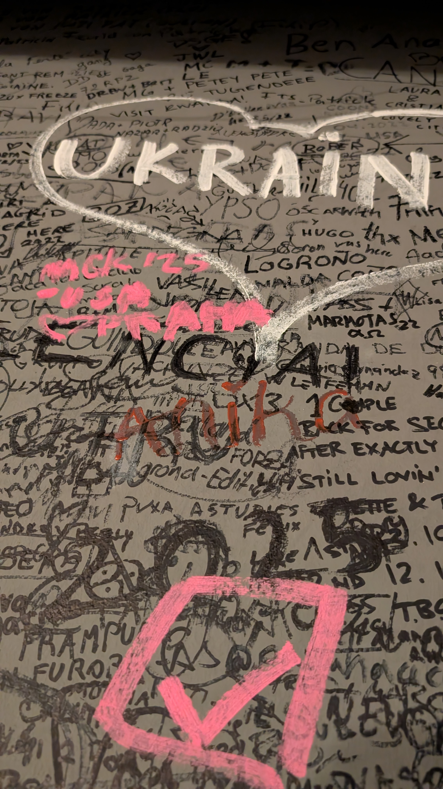
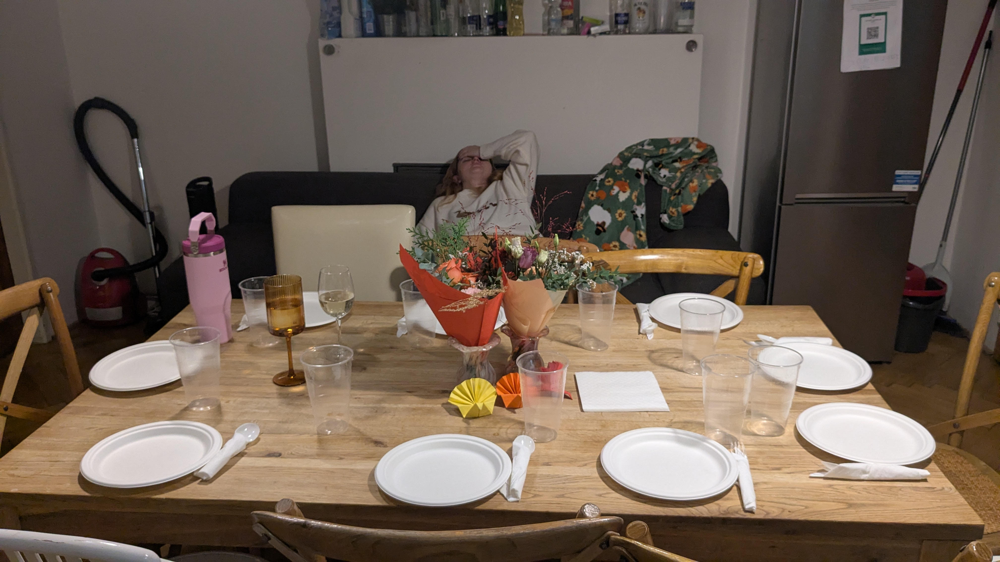
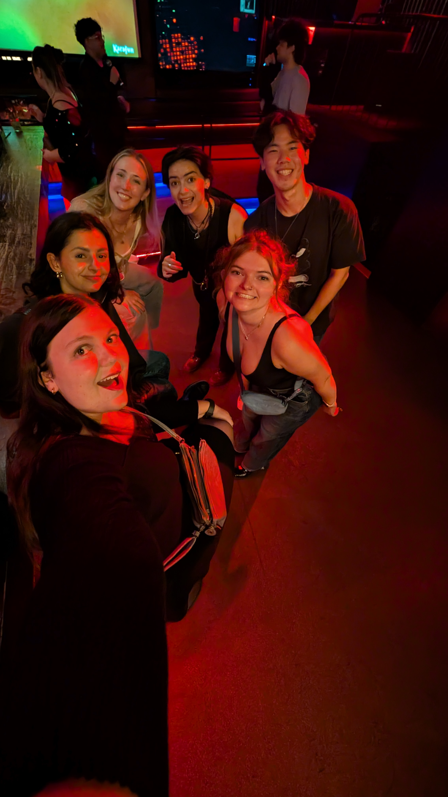
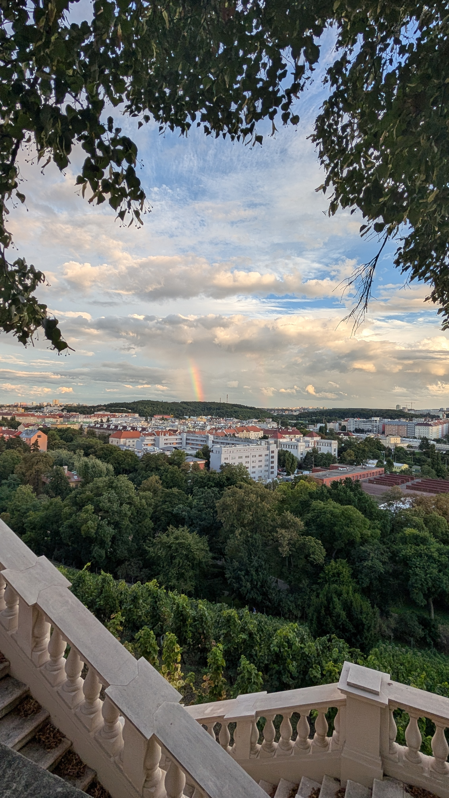
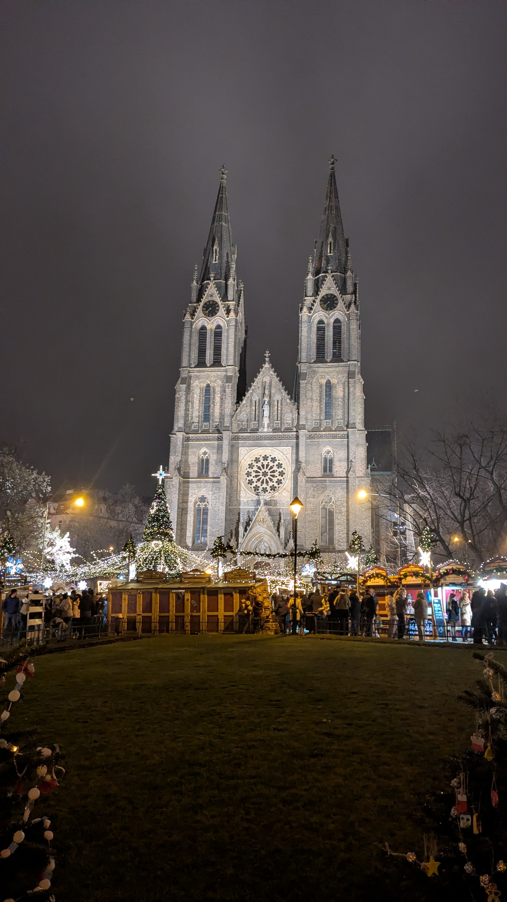

Without my friends my time abroad would have been nowhere near as fun. Looking back my favorite moments are the late night kebab runs, card nights in our local place, and exploring together. Living in a new country for 4 months is hard, and it only because I had others to face it with that I was able to reach beyond my comfort zone. If I had to choose only one thing to remember, it would be the people I shared this experience with.
I was so lucky to have my classes in Villa Grébovka, which in the middle of a gorgeous park in Prague 2. Each day my walk to and from my classes was through the park that surrounds the villa and ended with the view from the terrace outside. It reminded me every day to stop and appreciate the view.


My friends and I lived only a few blocks away from this square in Prague 2. It was the main place we went to catch the tram and was the closest metro stop. Quickly it became our square. The church can be spotted from most places in central Prague and it was always a game to spot "home." If I could find the church, I could find my way home. If I every go back to visit, this will be my first stop. Not to see the sights but to remember when it was "our" square.

